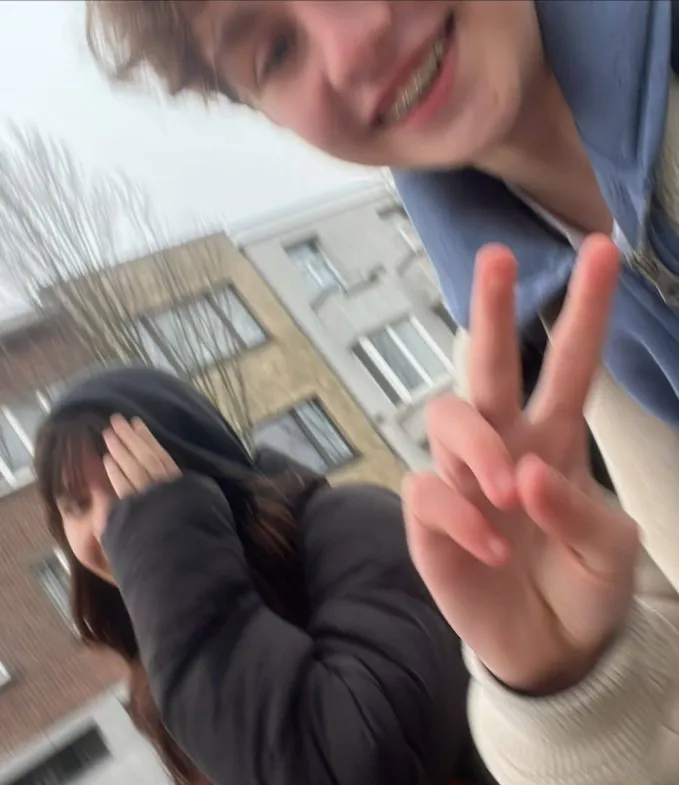
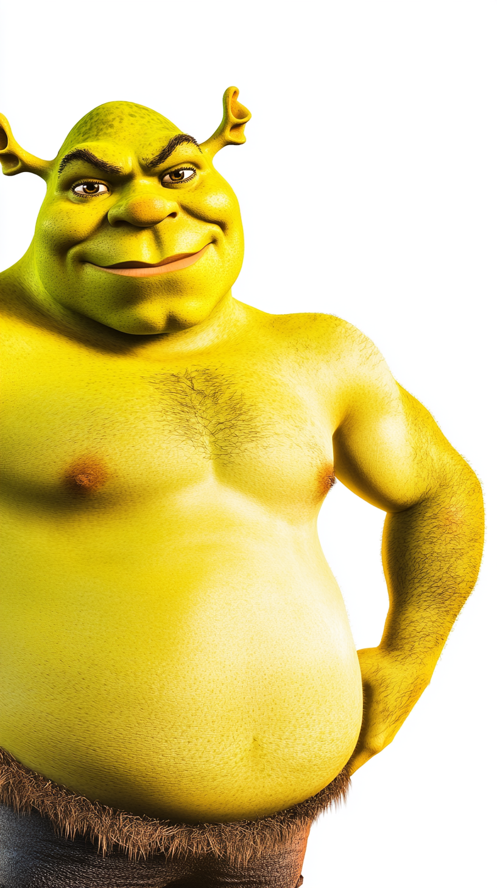

Fluiter
Fluiter van 3TEW/HUM houdt van hard fluiten. Ik hou ok van fluiten BTW :3
Warning! Deze website is niet officieel en niet gemaakt om iemand uit te lachen! Als je jezelf gepest voelt dan meld dat aan Hello Kitty Boy(KNOPJE CONTACTEN VAN BOWEN).
Warning 2 dat is beta versie van het KNMCFUN JOMA website, dat kan niet zo goed werken bij gsm's en vershilende browsers.
Er zijn veel geheimen, complotten en interessante persoonlijkheden op onze school.
Kijk ook naar onze galerij.
Help ontwikkelen van deze website, deel met jouw ideas, feedback, tips of bugs via contacten.
Fluiter van 3TEW/HUM houdt van hard fluiten. Ik hou ok van fluiten BTW :3
The Pion Butcher, you know the nickname and you know what she did. She dismembered a pion and tossed pion in the school toilet.
Bekend om op verboden plekken te klimmen en naar veboden dingen te kijken. Ja, en hij is nog een trein.
De jongen met zijn dikke boekentas is een soms irritante man die vaak "perongeluk" duwt jouw met zijn boekentas. Hij heeft ook vaak ruzies met half gekookte gremlin. Maar vaak hij is erg vriendelijk.
Agresion of Half Gekookte Gremlin op eesrt blik lijkt op cute petite meisje, maar van binnen zij is echt agressief, denk ik. Zij heeft vaak ruzies met de jongen met zijn dikke boekentas en met de hele 3TEW.
De Hello Kitty Boy is een jongen die vaak Temu Spider Man volgt. Hij heeft die web site gemaakt en aan zichzelf een bijnaam gegeven. Als je iets niet leuk in web-site ziet, dan jump hem.
Sigma, sigma boy, sigma boy, sigma boy. Every girl wants to dance with you. Sigma, sigma boy, sigma boy, sigma boy. I’m the kind of person you’ll need a year to win over
2-3 Years Dagestan is een sterke worstelaar. Hij heeft Temu Spider Man over zijn rug gegooit.
Stuiterbal is een energieke jongen die houdt om op zijn stoel te springen, vandaar zijn bijnaam.
BOOM
Handsome Bosnian is een knappe jongen uit Bosnië en Herzegovina. Hij is bekend om zijn goede looks en charmante persoonlijkheid.
Zus van Stuiterbal is niet zus van Stuiterbal maar iedereen zegen zo.
Boom Box Boy is een jongen die alles vies vindt. Zijn bijnaam is zomaar gekozen.
Do you want to build a snowman? Come on, let's go and play. I never see you anymore. Come out the door. It's like you've gone away. We used to be best buddies And now we're not. I wish you would tell me why.
Femboy is een meisje? Zij is bestie van Agresion, denk ik. Temu Spider Man weet waar zij wont BTW.
Admin van class groep is een persoon die zorgt zo dat niemand in group spamt te hard.
De Lereling Raad is een groep van leerkrachten en leerlingen die samenwerken aan het verbeteren van de schoolomgeving. Zo zegen die, maar wat doen die daar? Niemand weet het zeker. Maar mischien stiekem verkopen ze aardapel?
Het Gentlemen Complot is een genootschap van GROTE BOEKENTAS, Temu Spider Man, Hello Kitty Boy en Half Gekookte Gremlin. Niemand weet wat ze allemaal doen.
De pion moord is een mysterieus geval dat in de klas van 3TEW/HUM is opgetreden. Iemand heeft een pion gestolen en in wc gegoid. Moordenaar heeft een video van het gebeuren aan iemand doorgesturd.
Iemand heeft te hard gefluit tijdens les Nederlands.
Temu Spiderman heeft winst gemaakt met het verkopen van Pokemon kaarten.

